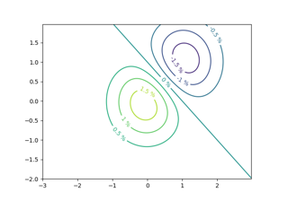
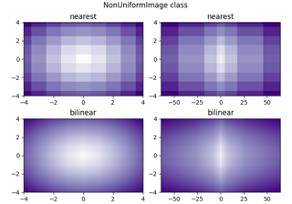
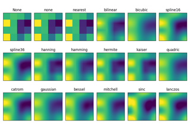
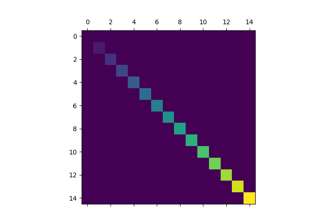
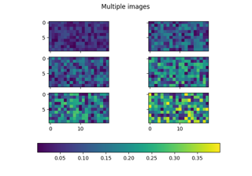
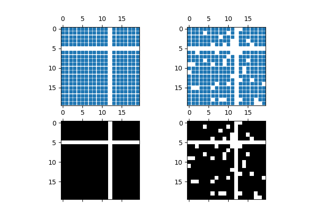
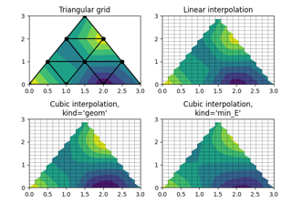

Images, contours and fields#



Contour Label Demo



Image nonuniform


Interpolations for imshow



Visualize matrices with matshow
Visualize matrices with matshow

Multiple images



Spy Demos



Triinterp Demo